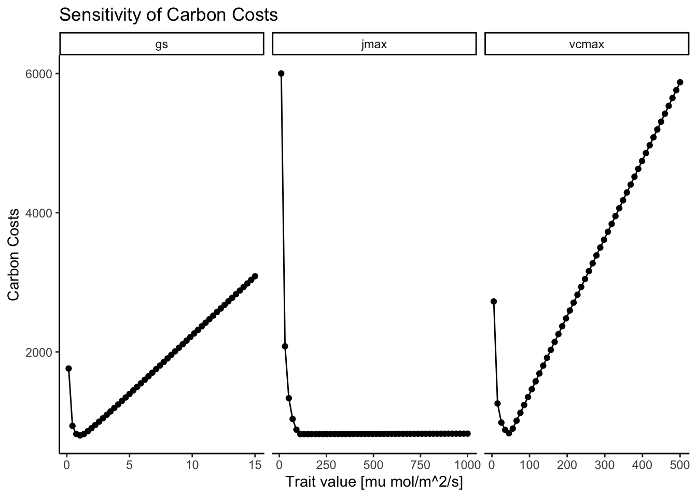
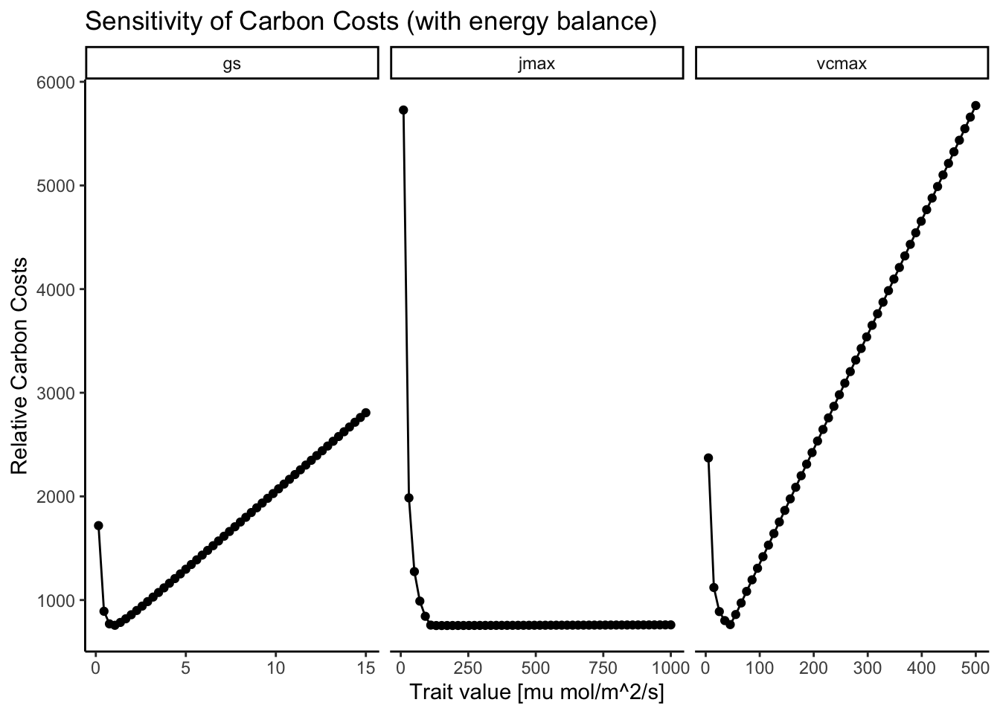

3 Algorithm
3.1 Description
The goal of this algorithm is to predict a leaf temperature at which the costs for maintaining photosynthesis are minimal. To do this, two optimization algorithms are required as displayed in Figure 3.1, the numerical P-Model algorithm and the energy balance algorithm.
The numerical P-Model algorithm solves the optimization problem to find the values for \(V_{cmax}\), \(J_{max}\), and \(g_{s}\) at which the carbon costs for maintaining photosynthesis are minimal (explained in Chapter 2):
\[ \frac{\beta \;V_{cmax} + 1.6\;D\;g_s + c \;J_{max} }{A_{gross}} = min. \tag{3.1}\]
The energy balance algorithm searches for the leaf temperature that closes the energy budget described in Section 2.2. Certain terms within the energy balance depend on assuming a leaf temperature in the first place. This turns the algorithm into an optimization problem where the goal is to minimize the difference between the initially assumed leaf temperature (\(T_{\text{leaf, init}}\)) and the leaf temperature that closes the energy balance (\(T_{\text{leaf, eb}}\)):
\[ T_{\text{leaf, init}} - T_{\text{leaf, eb}} = min. \tag{3.2}\]
The algorithm visualized in Figure 3.1 reads as follows:
1. Pick random values for vcmax, jmax, gs
2. Pick random value for tc_leaf (initial leaf temperature)
3. Calculate the energy balanced given tc_leaf, gs, abiotic environment
4. Check if initial tc_leaf equals tc_leaf that closes the energy balance:
If false, re-run energy balance with a new tc_leaf
If true, then proceed
5. Use tc_leaf, vcmax, jmax, gs, abiotic environment to calculate the carbon costs
6. Check if carbon costs are minimal
If false, re-start at 1. with new parameters for vcmax, jmax, and gs
If true, return tc_leaf, vcmax, jmax, gs3.2 Implementation
The individual algorithms described above are based on two functions - one function to calculate the quantity to be optimized and one function for handling the optimization. Below are demonstrations for calling the algorithms separately and coupled. All functions can be found in the R directory of this repository.
First, let’s set the variables for standard conditions that are used for example runs and the sensitivity analyses below.
# Get reference values for standard conditions
## Climate
tc_air <- 25 # degC
tc_leaf <- 30 # degC
vpd_air <- 1500 # Pa
patm <- 101325 # Pa
co2 <- 400 # ppm
ppfd <- 500e-6 # mol/m2/s
fapar <- 1 # -
## Traits
vcmax <- 50e-6 # mol/m2/s
jmax <- 100e-6 # mol/m2/s
gs <- 1.5e-6 # mol CO2 /m2/s/Pa
kphio <- 0.087 # -
beta <- 146 # -
c_cost <- 0.103 # -
wind <- 2 # m/s
leaf_size <- 0.02 # m
stomata_ratio <- 1 # -
leaf_abs <- 0.5 # -3.2.1 Numerical P-Model
The relevant functions are:
calculate_traits_and_costs()
#' Function to be optimized based on carbon costs for photosynthesis
#'
#' @details To achieve good numerical performance, the input values must be in per-day and not in per-second.
#'
#' @param par Input parameters in order: vcmax, jmax, gs [µmol/m^2/d]
#' @param tc_leaf Leaf temperature [ºC]
#' @param vpd_leaf Leaf vapor pressure deficit [Pa]
#' @param ppfd Photosynthetically Active Photon Flux Density [µmol/m^2/s]
#' @param fapar Fraction absorbed photosynthetically active radiation, set to 1 [-]
#' @param co2 Atmospheric partial pressure of CO2 [Pa]
#' @param patm Atmospheric pressure [Pa]
#' @param kphio Calibrated quantum yield efficiency [-]
#' @param beta Unit cost ratio for acquiring nitrogen over water [-]
#' @param maximize Whether carbon cost metric should be maximized or not [TRUE/FALSE]
#' @param return_all What to return. FALSE = carbon costs only. TRUE = all calculated variables
#' @param units_out_per_second Whether output units should be in per-day or per-second [TRUE/FALSE]
#' @param include_energy_balance Whether energy balance model should be coupled [TRUE/FALSE]
#' @param ... Additional arguments to be piped
#'
calculate_traits_and_costs <- function(
par,
tc_air,
vpd_air,
ppfd,
fapar = 1,
co2,
patm,
kphio,
beta = 146.0,
maximize = FALSE,
return_all = TRUE,
units_out_per_second = TRUE,
include_energy_balance = FALSE,
...) {
## 1: Parameters to be optimized:
vcmax <- par[1]
jmax <- par[2]
gs <- par[3]
## x: Given gs, calculate the leaf temperature
if (include_energy_balance == TRUE) {
tc_leaf <-
optimize_leaf_energy_balance(
tc_air = tc_air,
vpd_air = vpd_air,
gs = gs / 3600 / 24, # Adjust input to per-second
ppfd = ppfd / 3600 / 24, # Adjust input to per-second
patm = patm,
...
)
vpd_leaf <- air_vpd_to_leaf_vpd(vpd_air, tc_air, tc_leaf)
} else {
tc_leaf <- tc_air
vpd_leaf <- vpd_air
}
## 2: Get photosynthetic variables based on environmental conditions:
kmm <- rpmodel::kmm(tc_leaf, patm)
gammastar <- rpmodel::gammastar(tc_leaf, patm)
ns_star <- rpmodel::viscosity_h2o(tc_leaf, patm) / rpmodel::viscosity_h2o(25, 101325)
ca <- rpmodel::co2_to_ca(co2, patm)
kphio <- kphio * rpmodel::ftemp_kphio( tc_leaf, c4 = F)
iabs <- ppfd * fapar
## 3: Calculate assimilation rates with to-be-optimized jmax, vcmax and gs:
## 3.1: Electron transport is limiting
## Solve quadratic equation system using: A(Fick's Law) = A(Jmax Limitation)
## This leads to a quadratic equation:
## A * ci^2 + B * ci + C = 0
## 0 = a + b*x + c*x^2
## Jmax Limitation following Smith (1937):
## A = gs * (ca - ci)
## A = kphio * iabs (ci-gammastar)/ci+2*gammastar) * L
## L = 1 / sqrt(1 + ((4 * kphio * iabs)/jmax)^2)
## with
L <- 1.0 / sqrt(1.0 + ((4.0 * kphio * iabs)/jmax)^2)
A <- -gs
B <- gs * ca - 2 * gammastar * gs - L * kphio * iabs
C <- 2 * gammastar * gs * ca + L * kphio * iabs * gammastar
ci_j <- QUADM(A, B, C)
a_j <- kphio * iabs * (ci_j - gammastar)/(ci_j + 2 * gammastar) * L
c_cost <- 0.103 # As estimated by Wang et al. (2017)
# ............................................................................
# ## Jmax Limitation following Farquhar (1989):
# ## A = gs * (ca - ci)
# ## A = j/4 * (ci-gammastar)/ci+2*gammastar)
# ## j = (kphio * iabs + jmax - sqrt(( kphio * iabs + jmax)^2 - (4 * kphio * theta * iabs * jmax))) / (2*theta)
#
# ## with
# theta <- 0.85
# j <- (kphio * iabs + jmax - sqrt(( kphio * iabs + jmax)^2 - (4 * kphio * theta * iabs * jmax))) / (2 * theta)
# A <- -gs
# B <- gs * ca - 2 * gammastar * gs - j/4
# C <- 2 * gammastar * gs * ca + gammastar * j/4
#
# ci_j <- ci_j <- QUADM(A, B, C)
# a_j <- j/4 * (ci_j - gammastar)/(ci_j + 2 * gammastar)
#
# c_cost <- 0.053 # As estimated by Smith et al. (2019)
# ............................................................................
## 4: Rubisco is limiting
## Solve Eq. system
## A = gs (ca- ci)
## A = Vcmax * (ci - gammastar)/(ci + Kmm)
## This leads to a quadratic equation:
## A * ci^2 + B * ci + C = 0
## 0 = a + b*x + c*x^2
## with
A <- -1.0 * gs
B <- gs * ca - gs * kmm - vcmax
C <- gs * ca * kmm + vcmax * gammastar
ci_c <- QUADM(A, B, C)
a_c <- vcmax * (ci_c - gammastar) / (ci_c + kmm)
## 5. Take minimum of the two assimilation rates and maximum of the two ci
ci <- max(ci_c, ci_j)
a_gross <- min( a_j, a_c ) # Original approach using min()
# Alternative approach using hyperbolic minumum to avoid discontinuity (see Duursma et al (2015), Eq. (5))
# a_gross <- -QUADP(A = 1 - 1E-07, B = a_c + a_j, C = a_c*a_j)
## 6. Get carbon costs
carbon_costs <-
get_carbon_costs(
vpd_leaf = vpd_leaf,
ns_star = ns_star,
gs = gs,
vcmax = vcmax,
jmax = jmax,
beta = beta,
c_cost = c_cost,
a_gross = a_gross,
cost_type = "relative_carbon_costs"
)
## 7. Get additional variables
chi <- ci / ca
iwue <- ca * (1 - chi) / 1.6
# if (maximize) net_assim <- -carbon_costs
if (return_all) {
## Turn per-day units back into per-second
if (units_out_per_second == TRUE) {
vcmax <- vcmax / (3600 * 24) # Final unit: [mol/m2/s]
jmax <- jmax / (3600 * 24) # Final unit: [mol/m2/s]
gs <- gs / (3600 * 24) # Final unit: [mol/m2/s/Pa]
a_c <- a_c / (3600 * 24) # Final unit: [mol/m2/s]
a_j <- a_j / (3600 * 24) # Final unit: [mol/m2/s]
a_gross <- a_gross / (3600 * 24) # Final unit: [mol/m2/s]
# carbon_costs <- carbon_costs / (3600 * 24) # Final unit: [-]
}
## Output
return(
tibble(
vcmax = vcmax,
jmax = jmax,
gs = gs,
ci = ci,
chi = chi,
a_c = a_c,
a_j = a_j,
a_gross = a_gross,
ci_c = ci_c,
ci_j = ci_j,
iwue = iwue,
kmm = kmm,
gammastar = gammastar,
ns_star = ns_star,
cost_transp = carbon_costs$cost_transp,
cost_vcmax = carbon_costs$cost_vcmax,
cost_jmax = carbon_costs$cost_jmax,
carbon_costs = carbon_costs$carbon_costs,
include_energy_balance = include_energy_balance,
tc_air = tc_air,
tc_leaf = tc_leaf
)
)
} else {
return( carbon_costs$carbon_costs )
}
}
get_carbon_costs()
#' Function to calculate the carbon costs for photosynthesis
#'
#' @param ns_star Relative viscosity of water [-]
#' @param gs Stomatal conductance of CO2 [µmol/m2/s]
#' @param vpd_leaf Vapor pressure deficit at the leaf-level [Pa]
#' @param beta Unit cost ratio of acquiring nitrogen over water [-]
#' @param c_cost Marginal cost of maintaining Jmax [-]
#' @param vcmax Maximum rate of carboxylation [µmol/m2/s]
#' @param jmax Maximum rate of electron transport [µmol/m2/s]
#' @param a_gross Gross assimilation rate [µmol/m2/s]
#' @param cost_type Cost type that should be calculated
#'
#' @return List with cost for each each process and entire photosynthesis
get_carbon_costs <- function(
ns_star,
gs,
vpd_leaf,
beta,
vcmax,
c_cost,
jmax,
a_gross,
cost_type) {
# Check input
cost_options <- c("relative_carbon_costs")
if (!(cost_type %in% cost_options)) {
stop("get_carbon_costs: Requested cost type not implemented.")
}
cost_transp <- 1.6 * ns_star * gs * vpd_leaf
cost_vcmax <- beta * vcmax
cost_jmax <- c_cost * jmax
if (cost_type == "relative_carbon_costs") {
# With Jmax
carbon_costs <- (cost_transp + cost_vcmax + cost_jmax) / a_gross
# Without Jmax
# carbon_costs <- (cost_transp + cost_vcmax) / a_gross
}
out <- list(
cost_transp = cost_transp,
cost_vcmax = cost_vcmax,
cost_jmax = cost_jmax,
carbon_costs = carbon_costs
)
}
optimize_traits_and_costs()
#' Function to calculate the optimal traits and respective carbon costs
#'
#' @param tc_air Leaf temperature [ºC]
#' @param vpd_air Leaf-level vapor-pressure deficit
#' @param patm Atmospheric pressure [Pa]
#' @param co2 Atmospheric CO2 concentration [ppm]
#' @param ppfd Photosynthetically Active Photon Flux Density [µmol/m2/s]
#' @param kphio Parameter for QYE [-]
#' @param vcmax_start Starting values for vcmax in the optimization routine
#' @param jmax_start Starting values for jmax in the optimization routine
#' @param gs_start Starting values for gs in the optimization routine
#' @param ... Additional arguments to be piped
#'
optimize_traits_and_costs <- function(
tc_air,
vpd_air,
patm,
co2,
ppfd,
kphio,
include_energy_balance = FALSE,
vcmax_start = NA,
jmax_start = NA,
gs_start = NA,
...
) {
## Input for optimization has to be in per-day to work properly:
ppfd <- ppfd * 3600 * 24 # / 3600 / 24
vcmax_start <- 5 # / 3600 / 24
jmax_start <- 10 # / 3600 / 24
gs_start <- 0.05 # / 3600 / 24
## Run optimization
## (TODO: Output order of magnitude depends on lower/upper boundaries)
out_optim <- optimr::optimr(
## Optimization inputs:
par = c( vcmax_start, jmax_start , gs_start),
upper = c( vcmax_start*100, jmax_start*100, gs_start*10 ),
lower = c( vcmax_start/100, jmax_start/100, gs_start/10 ),
fn = calculate_traits_and_costs,
method = "L-BFGS-B",
control = list(maxit = 1000),
## Function inputs:
tc_air = tc_air,
vpd_air = vpd_air,
patm = patm,
co2 = co2,
ppfd = ppfd,
kphio = kphio,
include_energy_balance = include_energy_balance,
maximize = TRUE,
return_all = FALSE,
...)
## Get the carbon costs for the optimized traits
optimized_par <- calculate_traits_and_costs(
par = out_optim$par,
tc_air = tc_air,
vpd_air = vpd_air,
patm = patm,
co2 = co2,
ppfd = ppfd,
kphio = kphio,
include_energy_balance = include_energy_balance,
units_out_per_second = TRUE,
return_all = TRUE,
...)
## Return optimized traits and carbon costs
return(optimized_par)
}3.2.1.1 Comparison Against Analytical Solution
Below is a demonstration of the numerical P-Model algorithm without considering the leaf energy balance. Comparing the results of the numerical P-Model against the analytic P-Model shows that they achieve a similar \(\chi \approx0.715\) but with quite different values for \(V_{cmax}\), \(J_{cmax}\), and \(g_{s}\). This issue is explained further below.
Code
| vcmax | jmax | gs | chi | ci | gpp | ca | gammastar | kmm | ns_star | xi | mj | mc | iwue | vcmax25 | jmax25 | rd |
|---|---|---|---|---|---|---|---|---|---|---|---|---|---|---|---|---|
| 41.17731 | 66.51527 | 0.881992 | 0.7154304 | 28.99639 | 0.0001222 | 40.53 | 4.332 | 70.84225 | 1 | 82.82301 | 0.654916 | 0.2470426 | 7.208503 | 4.12e-05 | 6.65e-05 | 6e-07 |
Code
| vcmax | jmax | gs | chi | ci | a_c | a_j | a_gross | ci_c | ci_j | iwue | kmm | gammastar | ns_star | cost_transp | cost_vcmax | cost_jmax | carbon_costs | include_energy_balance | tc_air | tc_leaf |
|---|---|---|---|---|---|---|---|---|---|---|---|---|---|---|---|---|---|---|---|---|
| 55.15741 | 115.661 | 1.182008 | 0.715532 | 29.00051 | 1.36e-05 | 1.36e-05 | 1.36e-05 | 29.00051 | 28.99605 | 7.205929 | 70.84225 | 4.332 | 1 | 245.1011 | 695.7776 | 1.029291 | 799.9531 | FALSE | 25 | 25 |
3.2.1.2 Cost function
From Equation 2.10, we can tell that the smaller the value for a trait becomes, the smaller the gross assimilation becomes and thus the carbon costs become larger. Above the minimum, the carbon costs become larger because of additional limitations to photosynthesis that do not allow for an even increase in gross assimilation with increasing trait.
In Figure 3.2, this sensitivity of the carbon costs against varying values of the different traits are displayed. As can be seen, there are distinct minima for the cost of transpiration (\(g_s\)) and for the cost of carboxylation (\(V_{cmax}\)). For the cost of electron transport however, there is no distinct minima (\(J_{max}\)).
The distinct minima for \(V_{cmax}\) and \(g_{s}\) occur where \(A_{gross}\) switches from \(A_{c}\)-limitation to \(A_{j}\)-limitation, i.e., at the coordination point of \(A_{c} = A_{j}\). At this point, increasing \(V_{cmax}\) or \(g_{s}\) only increases the costs without any gain in photosynthesis.
In Figure 3.2, there is no distinct minimum visible for \(J_{max}\) because its associated costs are comparably small; the cost-factor \(\beta\) is set to 146, whereas \(c\) is set to 0.103. So, the algorithm finds a \(J_{max}\) that is simply large enough to not cause \(A_{j}\)-limitation but once \(A_{c}\) is limiting, \(J_{max}\) can increase indefinitely because of its low costs. Figure 3.3 zooms in on the \(Cost ~ J_{max}\) function, where the increase in costs with increasing \(J_{max}\) is visible. However, this increase is so small that the algorithm does not pick it up in the optimization routine.
Code
# Get reference dataframe
n_steps <- 50
df_base_cc <- tibble(.rows = n_steps)
df_base_cc$vcmax <- rep(vcmax, n_steps)
df_base_cc$jmax <- rep(jmax, n_steps)
df_base_cc$gs <- rep(gs, n_steps)
df_base_cc$cost_total <- rep(NA, n_steps)
df_base_cc$cost_vcmax <- rep(NA, n_steps)
df_base_cc$cost_jmax <- rep(NA, n_steps)
df_base_cc$cost_gs <- rep(NA, n_steps)
df_cc <- tibble()
# Calculate carbon costs
loop_carbon_costs <- function(df_in, var) {
for (i in 1:nrow(df_in)) {
output <-
calculate_traits_and_costs(
par = c(df_in$vcmax[i],
df_in$jmax[i],
df_in$gs[i]),
tc_air = tc_air,
vpd_air = vpd_air,
ppfd = ppfd,
co2 = co2,
patm = patm,
kphio = kphio,
include_energy_balance = FALSE,
return_all = TRUE,
units_out_per_second = TRUE
)
df_in$cost_total[i] <- output$carbon_costs
df_in$cost_vcmax[i] <- output$cost_vcmax
df_in$cost_jmax[i] <- output$cost_jmax
df_in$cost_gs[i] <- output$cost_transp
}
df_out <-
df_in |>
select(starts_with("cost"), !!var) |>
# pivot_longer(
# cols = starts_with("cost"),
# names_to = "cost_name",
# values_to = "cost_value") |>
pivot_longer(
cols = !!var,
names_to = "var",
values_to = "val")
return(df_out)
}
## Run function
# Vcmax
df_tmp <- df_base_cc
df_tmp$vcmax <- seq(vcmax/10, vcmax*10, length.out = n_steps)
df_tmp <- loop_carbon_costs(df_tmp, "vcmax")
df_cc <- rbind(df_cc, df_tmp)
# Jmax
df_tmp <- df_base_cc
df_tmp$jmax <- seq(jmax/10, jmax*10, length.out = n_steps)
df_tmp <- loop_carbon_costs(df_tmp, "jmax")
df_cc <- rbind(df_cc, df_tmp)
# gs
df_tmp <- df_base_cc
df_tmp$gs <- seq(gs/10, gs*10, length.out = n_steps)
df_tmp <- loop_carbon_costs(df_tmp, "gs")
df_cc <- rbind(df_cc, df_tmp)
## Plot it
df_cc |>
ggplot() +
aes(x = val*1e6, y = cost_total) +
geom_line() +
geom_point() +
facet_wrap(~var, scales = "free_x") +
labs(title = "Sensitivity of Carbon Costs",
x = "Trait value [mu mol/m^2/s]",
y = "Carbon Costs") +
theme_classic()
Code
3.2.2 Energy Balance
The relevant functions are:
calculate_leaf_energy_balance()
#' Function to calculate the energy balance of a leaf
#'
#' @description This function calculates the energy balance of the leaf, given biotic and abiotic drivers. Output options are the difference between input-ed and calculated leaf temperature ("balance") or all calculated energy fluxes. Note: This functions has been taken from the {plantecophys} package and modified for new purposes here.
#'
#' @details This leaf energy balance model was adapted from Duursma, Remko A. 2015. “Plantecophys - An R Package for Analysing and Modelling Leaf Gas Exchange Data.” Edited by Paul C. Struik. <i>PLOS ONE</i> 10 (11): e0143346. https://doi.org/10/bkmj. It is based on the Penman-Monteith equation in appendix of Leuning, R., F. M. Kelliher, D. G. G. Pury, and E.-D. Schulze. 1995. “Leaf Nitrogen, Photosynthesis, Conductance and Transpiration: Scaling from Leaves to Canopies.” <i>Plant, Cell and Environment</i> 18 (10): 1183–1200. https://doi.org/10.1111/j.1365-3040.1995.tb00628.x.
#'
#' @param tc_leaf Assumed leaf Temperature [ºC]
#' @param tc_air Air Temperature [ºC]
#' @param gs Stomatal conductance of CO2 [mol/m2/s]
#' @param ppfd Photosynthetically Active Photon Flux Density [mol/m2/s]
#' @param vpd_air Vapor pressure deficit of the air [Pa]
#' @param patm Atmospheric pressure [Pa]
#' @param wind Wind speed [m/s]
#' @param leaf_size Characteristic leaf width [m]
#' @param stomata_ratio Stomatal ratio: 1 = Hypostomataous (stomata on one leaf side), 2 = Amphistomataous (stomata on both leaf sides) [-]
#' @param leaf_abs Leaf absorptance of solar radiation (range [0,1]) [-]
#' @param return_what Output to be returned ("balance" for squared difference between input and calculated leaf temperature, "fluxes" for all energy fluxes calculated by the energy balance)
#'
calculate_leaf_energy_balance <- function(
tc_leaf = 21.5,
tc_air = 20,
gs = 1.5e-6,
ppfd = 1500e-6,
vpd_air = 2000,
patm = 101325,
wind = 2,
leaf_size = 0.02,
stomata_ratio = 1,
leaf_abs = 0.5,
return_what = c("balance","fluxes")
){
# Define arguments
return_what <- match.arg(return_what)
# Important!: Function uses different values than used in rpmodel
# gs from rpmodel is in mol CO2 / m2 / s / Pa
# gs here is in mol H2O / m2 / s
# Turning stomatal conductance of CO2 into conductance of H2O
gs <- 1.6 * gs * patm
ppfd <- ppfd * 10^6
# Define constants
Boltz <- 5.67 * 10^-8 # w M-2 K-4
Emissivity <- 0.95 # -
LatEvap <- 2.54 # MJ kg-1
CPAIR <- 1010.0 # J kg-1 K-1
H2OLV0 <- 2.501e6 # J kg-1
H2OMW <- 18e-3 # J kg-1
AIRMA <- 29.e-3 # mol mass air (kg/mol)
AIRDENS <- 1.204 # kg m-3
UMOLPERJ <- 4.57 # Micromole photons per Joule [-]
DHEAT <- 21.5e-6 # molecular diffusivity for heat
# Density of dry air
AIRDENS <- patm / (287.058 * celsius_to_kelvin(tc_air))
# Latent heat of water vapour at air temperature (J mol-1)
LHV <- (H2OLV0 - 2.365E3 * tc_air) * H2OMW
# Const s in Penman-Monteith equation (Pa K-1)
SLOPE <- (esat(tc_air + 0.1) - esat(tc_air)) / 0.1
# Radiation conductance (mol m-2 s-1)
Gradiation <- 4. * Boltz * celsius_to_kelvin(tc_air)^3 * Emissivity / (CPAIR * AIRMA)
# See Leuning et al (1995) PC&E 18:1183-1200 Appendix E
# Boundary layer conductance for heat - single sided, forced convection
CMOLAR <- patm / (8.314 * celsius_to_kelvin(tc_air)) # .Rgas() in package...
Gbhforced <- 0.003 * sqrt(wind / leaf_size) * CMOLAR
# Free convection
GRASHOF <- 1.6E8 * abs(tc_leaf - tc_air) * (leaf_size^3) # Grashof number
Gbhfree <- 0.5 * DHEAT * (GRASHOF^0.25) / leaf_size * CMOLAR
# Total conductance to heat (both leaf sides)
Gbh <- 2 * (Gbhfree + Gbhforced)
# Heat and radiative conductance
Gbhr <- Gbh + 2 * Gradiation
# Boundary layer conductance for water (mol m-2 s-1)
Gbw <- stomata_ratio * 1.075 * Gbh # Leuning 1995
gw <- gs * Gbw / (gs + Gbw)
# Longwave radiation
# (positive flux is heat loss from leaf)
Rlongup <- Emissivity * Boltz * celsius_to_kelvin(tc_leaf)^4
# Rnet
Rsol <- 2 * ppfd / UMOLPERJ # W m-2
Rnet <- leaf_abs * Rsol - Rlongup # full
# Isothermal net radiation (Leuning et al. 1995, Appendix)
ea <- esat(tc_air, patm) - vpd_air
ema <- 0.642 * (ea / celsius_to_kelvin(tc_air))^(1 / 7)
# Safety Check
if (is.na(ema)){
stop("calculate_leaf_energy_balance: `ema` is NA, likely due to unrealistic combination of given vpd and air temperature (too high vpd for that air temperature).")
}
Rnetiso <- leaf_abs * Rsol - (1 - ema) * Boltz * celsius_to_kelvin(tc_air)^4
# Isothermal version of the Penmon-Monteith equation
GAMMA <- CPAIR * AIRMA * patm / LHV
ET <- (1 / LHV) * (SLOPE * Rnetiso + vpd_air * Gbh * CPAIR * AIRMA) / (SLOPE + GAMMA * Gbhr / gw)
# Latent heat loss
lambdaET <- LHV * ET
# Heat flux calculated using Gradiation (Leuning 1995, Eq. 11)
Y <- 1 / (1 + Gradiation / Gbh)
H2 <- Y * (Rnetiso - lambdaET)
# Heat flux calculated from leaf-air T difference.
# (positive flux is heat loss from leaf)
H <- -CPAIR * AIRDENS * (Gbh / CMOLAR) * (tc_air - tc_leaf)
# Leaf-air temperature difference recalculated from energy balance.
# (same equation as above!)
tc_leaf2 <- tc_air + H2 / (CPAIR * AIRDENS * (Gbh / CMOLAR))
# Difference between input tc_leaf and calculated, this will be minimized.
EnergyBal <- (tc_leaf - tc_leaf2) # OLD, needed to work with uniroot()
# EnergyBal <- (tc_leaf - tc_leaf2)^2 # NEW, needed to work with optimr()
# EnergyBal <- abs(tc_leaf - tc_leaf2) # NEW, needs more iterations than ()^2
if (return_what == "balance") {
return(EnergyBal) # OLD
# out <- list(tc_leaf = tc_leaf, # NEW
# tc_leaf_star = tc_leaf2, # NEW
# eps = EnergyBal) # NEW
# return(out) # NEW
}
if (return_what == "fluxes") {
l <- data.frame(ELEAFeb = 1000 * ET, Gradiation = Gradiation, Rsol = Rsol, Rnetiso = Rnetiso, Rlongup = Rlongup, H = H, lambdaET = lambdaET, gw = gw, Gbh = Gbh, H2 = H2, tc_leaf2 = tc_leaf2)
return(l)
}
}
optimize_leaf_energy_balance()
#' Optimization of the leaf energy balance temperature difference
#'
#' @details This function minimizes the difference between input and energy-balance-closure leaf temperature calculated in calculation_leaf_energy_balance().
#'
#' @param tc_air Leaf temperature [ºC]
#' @param vpd_air Leaf vapor pressure deficit [Pa]
#' @param gs Stomatal conductance [µmol CO2 /m^2/s]
#' @param ppfd Photosynthetically Active Photon Flux Density [µmol/m^2/s]
#' @param patm Atmospheric pressure [Pa]
#' @param ... Additional arguments to be piped
#'
optimize_leaf_energy_balance <- function(
tc_air,
vpd_air,
gs,
ppfd,
patm,
...) { # ... for any additional leaf energy balance parameter like wind
## IN DEV:
sol_optimize <- uniroot(
f = calculate_leaf_energy_balance,
interval = c(max(tc_air - 15, 1), tc_air + 15),
# interval = c(0, 50),
tc_air = tc_air,
vpd_air = vpd_air,
gs = gs,
ppfd = ppfd,
patm = patm,
return_what = "balance",
...
)
tc_leaf <- sol_optimize$root
return(tc_leaf)
## TODO: OPTIM() AND OPTIMR() BELOW CRASH FOR SOME REASON...
# out_optim <- optimr::optimr(
#
# ## Optimization inputs:
# par = tc_air,
# lower = 1,
# upper = 40,
# fn = diff_tcleaf_in_and_tcleaf_eb,
# method = "L-BFGS-B",
# control = list(maxit = 1000),
#
# ## Function inputs:
# tc_air = tc_air,
# ppfd = ppfd,
# patm = patm,
# co2 = co2,
# vpd = vpd,
# kphio = kphio,
# method_jmaxlim_inst = method_jmaxlim_inst,
# method_eb = method_eb)
#
# out_optim <- optim(
#
# ## Optimization inputs:
# par = tc_air,
# lower = 1,
# upper = 40,
# fn = diff_tcleaf_in_and_tcleaf_eb,
# method = "L-BFGS-B",
# control = list(maxit = 1000),
#
# ## Function inputs:
# tc_air = tc_air,
# ppfd = ppfd,
# patm = patm,
# co2 = co2,
# vpd = vpd,
# kphio = kphio,
# method_jmaxlim_inst = method_jmaxlim_inst,
# method_eb = method_eb)
}Below is a demonstration of the energy balance functions and a sensitivity analysis. The difference between input leaf temperature and energy-balance-closure leaf temperature is:
calculate_leaf_energy_balance(
tc_leaf = tc_leaf,
tc_air = tc_air,
gs = gs,
ppfd = ppfd,
vpd_air = vpd_air,
patm = patm,
return_what = c("balance")
)[1] 5.933511The energy balance variables under the given conditions are:
calculate_leaf_energy_balance(
tc_leaf = tc_leaf,
tc_air = tc_air,
gs = gs,
ppfd = ppfd,
vpd_air = vpd_air,
patm = patm,
return_what = c("fluxes")
) |> knitr::kable()| ELEAFeb | Gradiation | Rsol | Rnetiso | Rlongup | H | lambdaET | gw | Gbh | H2 | tc_leaf2 |
|---|---|---|---|---|---|---|---|---|---|---|
| 2.562691 | 0.1949628 | 218.8184 | 29.60964 | 454.922 | 416.2046 | 112.6399 | 0.2252718 | 2.845609 | -77.7063 | 24.06649 |
After minimizing the difference between input and energy-balance-closure leaf temperature, the final predicted leaf temperature is:
optimize_leaf_energy_balance(
tc_air = tc_air,
vpd_air = vpd_air,
gs = gs,
ppfd = ppfd,
patm = patm,
)[1] 24.041913.2.2.1 Sensitivity Analysis
3.2.2.1.1 Abiotic drivers
As shown in Figure 3.4 and Figure 3.5. The main abiotic drivers of the modeled leaf temperature are variables that directly drive the leave’s energy input: light and air temperature. The air temperature is the main driver of leaf temperature. Interestingly, the energy balance model simulates a strong decoupling of leaf and air temperatures. At low air temperatures, the leaf is warmer than the air. And at high air temperatures, the leaf is cooler. This is likely driven by the co-occurring temperature-driven change in vapor pressure deficit that increases evaporative cooling.
The incoming light is the main source of short-wave energy input, and is therefore also a strong driver of leaf temperature. At low light levels, leaves are modeled to be cooler than air. At high light values, however, the leaf becomes substantially warmer than the air.
At higher wind speeds, the boundary conductance layer becomes thinner (i.e., the boundary layer conductance increases). This drives an equilibration of leaf and air temperatures, so that there is less decoupling at high wind speeds.
Code
# Define function first --------------------------------------------------------
run_fun <- function(df, var) {
for (i in 1:nrow(df)) {
# print(i)
df$tc_leaf[i] <-
optimize_leaf_energy_balance(
tc_air = df$tc_air[i],
vpd_air = df$vpd_air[i],
gs = df$gs[i],
ppfd = df$ppfd[i],
patm = df$patm[i],
wind = df$wind[i],
leaf_size = df$leaf_size[i],
stomata_ratio = df$stomata_ratio[i],
leaf_abs = df$leaf_abs[i]
)
df$tc_diff[i] = df$tc_leaf[i] - df$tc_air[i]
}
df_out <- df |>
select(c(!!var, "tc_leaf", "tc_diff")) |>
pivot_longer(cols = !!var)
return(df_out)
}
# Create empty df for plotting ------------------------------------------------
df_abio <- tibble()
df_bio <- tibble()
# Create base df for sensitivity analysis -------------------------------------
n_steps <- 20
df_base <- tibble(.rows = n_steps)
df_base$tc_air <- rep(tc_air , n_steps)
df_base$vpd_air <- rep(vpd_air , n_steps)
df_base$gs <- rep(gs , n_steps)
df_base$co2 <- rep(co2 , n_steps)
df_base$ppfd <- rep(ppfd , n_steps)
df_base$patm <- rep(patm , n_steps)
df_base$wind <- rep(wind , n_steps)
df_base$leaf_size <- rep(leaf_size, n_steps)
df_base$leaf_abs <- rep(leaf_abs, n_steps)
df_base$tc_leaf <- rep(NA, n_steps)
df_base$tc_diff <- rep(NA, n_steps)
df_base$stomata_ratio <- rep(1, stomata_ratio)
df_base$kphio <- rep(kphio, stomata_ratio)
# Run function across all variables -------------------------------------------
### ABIOTIC VARIABLES
## Air temperature and VPD
df_tmp <- df_base
df_tmp$tc_air <- seq(1, 50, length.out = n_steps)
# Account for changes in vpd when temperature changes:
df_tmp$vpd_air <-
air_vpd_to_leaf_vpd(
vpd_air = vpd_air,
tc_air = tc_air,
tc_leaf = df_tmp$tc_air)
# Removing negative vpd values
# df_tmp <- mutate(df_tmp, vpd_air = ifelse(vpd_air < 0, 10, vpd_air))
df_tmp <- run_fun(df_tmp, "tc_air")
df_abio <- rbind(df_abio, df_tmp)
# VPD
df_tmp <- df_base
df_tmp$vpd_air <- seq(vpd_air/2, vpd_air*2, length.out = n_steps)
df_tmp <- run_fun(df_tmp, "vpd_air")
df_abio <- rbind(df_abio, df_tmp)
# PPFD
df_tmp <- df_base
df_tmp$ppfd <- seq(ppfd/10, ppfd*10, length.out = n_steps)
df_tmp <- run_fun(df_tmp, "ppfd")
df_abio <- rbind(df_abio, df_tmp)
# Atmospheric pressure
df_tmp <- df_base
df_tmp$patm <- seq(patm/10, patm*10, length.out = n_steps)
df_tmp <- run_fun(df_tmp, "patm")
df_abio <- rbind(df_abio, df_tmp)
# Wind
df_tmp <- df_base
df_tmp$wind <- seq(wind/10, wind*10, length.out = n_steps)
df_tmp <- run_fun(df_tmp, "wind")
df_abio <- rbind(df_abio, df_tmp)
### BIOTIC VARIABLES
# Stomatal Conductance
df_tmp <- df_base
df_tmp$gs <- seq(gs/10, gs*10, length.out = n_steps)
df_tmp <- run_fun(df_tmp, "gs")
df_bio <- rbind(df_bio, df_tmp)
# Leaf Size
df_tmp <- df_base
df_tmp$leaf_size <- seq(leaf_size/10, leaf_size*10, length.out = n_steps)
df_tmp <- run_fun(df_tmp, "leaf_size")
df_bio <- rbind(df_bio, df_tmp)
# Leaf absorptance
df_tmp <- df_base
df_tmp$leaf_abs <- seq(leaf_abs/10, leaf_abs*10, length.out = n_steps)
df_tmp <- run_fun(df_tmp, "leaf_abs")
df_bio <- rbind(df_bio, df_tmp)
# Stomatal Ratio
df_tmp <- df_base |> slice(1:2)
df_tmp$stomata_ratio <- c(1, 2)
df_tmp <- run_fun(df_tmp, "stomata_ratio")
df_bio <- rbind(df_bio, df_tmp)
df_abio$name <- as.factor(df_abio$name)
df_bio$name <- as.factor(df_bio$name)Code
Code
df_abio |>
ggplot() +
aes(x = value,
y = tc_diff) +
geom_hline(yintercept = 0, lty = "dotted") +
geom_line() +
geom_point() +
facet_wrap(~name,
scales = "free_x") +
ylim(-7.5, 7.5) +
labs(title = "Sensitivity of delta T to abiotic drivers",
subtitle = "Below dotted line means the leaf is cooler",
y = "T_leaf - T_air [ºC]",
x = "Variable value") +
theme_classic()3.2.2.1.2 Biotic drivers
Again, the main drivers of leaf temperature are variables that directly influence the amount of energy taken up or released by the leaf: stomatal conductance and leaf absorptance (see Figure 3.6 and Figure 3.7). The larger the stomatal conductance, the more transpirative cooling occurs, the stronger the leaf is cooled. However, this increase has a saturating effect and the same increase in stomatal conductance does not always lead to the same decrease in leaf temperature. The leaf absorptance controls how much of the incoming short-wave radiation is absorbed by the leaf and therefore scales leaf temperatures linearly. Smaller leaves have smaller boundary layers and their temperature are thus more quickly equilibrated with air temperatures. Interestingly, given the standard conditions here, a larger leaf leads to constantly cooler leaves.
Warning
In general, the model analysis shows that leaves can cool significantly below air temperatures. However, this could be an artifact of picking a relatively high stomatal conductance that drives this cooling. Real-world situations may have substantially lower values for stomatal conductance leading to less cooling.
Code
Code
df_bio |>
ggplot() +
aes(x = value,
y = tc_diff) +
geom_hline(yintercept = 0, lty = "dotted") +
geom_line() +
geom_point() +
facet_wrap(~name,
scales = "free_x") +
ylim(-7.5, 7.5) +
labs(title = "Sensitivity of delta T to biotic drivers",
subtitle = "Below dotted line means the leaf is cooler",
y = "T_leaf - T_air [ºC]",
x = "Variable value") +
theme_classic()3.2.3 Coupled Model
Below is a demonstration for the predictions of the numerical P-Model with and without the energy balance coupled. By comparing Table 3.3 and Table 3.4 below, we see that under standard conditions, the coupled model tends to predict a lower \(V_{cmax}\) and \(T_{leaf}\); a higher \(g_{s}\) and \(\chi\); and a similar \(J_{max}\).
Figure 3.8 shows how this difference of predicted traits plays out along a gradient of air temperatures. First of all, it is clearly visible that there are numerical instabilities occurring at low air temperatures. As explained above and re-emphasized in the box below, this is likely due to the delicate sensitivity of the energy balance model to the given input of vapor pressure deficit and air temperature.
Nonetheless, two important dynamics can be identified: First, attaching the energy balance frees stomatal conductance to regulate leaf temperatures. At low temperatures, the model predicts that it is beneficial to have increase leaf temperatures to reduce carbon costs. However, it is important to note that this could also be a consequence of the forcing to the energy balance itself (see Figure 3.5 and box below). Vice versa, there is a tendency to increase stomatal conductance at high air temperatures to cool leaves and thereby minimize the carbon costs.
These higher leaf temperatures translate to the second dynamic to highlight: We see a reduction in predicted \(V_{cmax}\) at these high temperatures, as it is predicted by the Least-Cost Hypothesis: At higher temperatures, costs can be reduced by reducing investments into \(V_{cmax}\) whilst still benefiting from increasing assimilation due to faster enzyme kinetics. In theory, this should also apply to \(J_{max}\). However, due to its minor influence on the overall costs - as described above - there is no clear change in its prediction when coupling the energy balance model.
An important note on the results shown below.
Note that the assumed vapor pressure deficit, how it changes with air temperature, and how it plays into stomatal conductance is highly influential on the numerical stability of the entire routine. We are not using any real-world data here, which causes the temperature-driven vapor pressure deficit calculation to likely have unrealistically low (or strongly negative) values. As a consequence, the effect of having warmer leaf-than-air temperatures may be a forcing artifact!
3.2.3.0.1 Standard Conditions
Code
# Numerical P-Model
optimize_traits_and_costs(
tc_air = tc_air,
vpd_air = vpd_air,
patm = patm,
co2 = co2,
ppfd = ppfd,
kphio = kphio,
include_energy_balance = FALSE
) |>
mutate(vcmax = vcmax * 1e6, jmax = jmax * 1e6, gs = gs * 1e6, a_gross = a_gross * 1e6) |>
relocate(vcmax, jmax, gs, chi, ci, a_gross) |> knitr::kable()| vcmax | jmax | gs | chi | ci | a_gross | a_c | a_j | ci_c | ci_j | iwue | kmm | gammastar | ns_star | cost_transp | cost_vcmax | cost_jmax | carbon_costs | include_energy_balance | tc_air | tc_leaf |
|---|---|---|---|---|---|---|---|---|---|---|---|---|---|---|---|---|---|---|---|---|
| 55.15741 | 115.661 | 1.182008 | 0.715532 | 29.00051 | 13.62794 | 1.36e-05 | 1.36e-05 | 29.00051 | 28.99605 | 7.205929 | 70.84225 | 4.332 | 1 | 245.1011 | 695.7776 | 1.029291 | 799.9531 | FALSE | 25 | 25 |
Code
# Coupled Numerical P-Model
# To call the coupled model, simply set `include_energy_balance == TRUE`
optimize_traits_and_costs(
tc_air = tc_air,
vpd_air = vpd_air,
patm = patm,
co2 = co2,
ppfd = ppfd,
kphio = kphio,
include_energy_balance = TRUE
) |>
mutate(vcmax = vcmax * 1e6, jmax = jmax * 1e6, gs = gs * 1e6, a_gross = a_gross * 1e6) |>
relocate(vcmax, jmax, gs, chi, ci, a_gross) |> knitr::kable()| vcmax | jmax | gs | chi | ci | a_gross | a_c | a_j | ci_c | ci_j | iwue | kmm | gammastar | ns_star | cost_transp | cost_vcmax | cost_jmax | carbon_costs | include_energy_balance | tc_air | tc_leaf |
|---|---|---|---|---|---|---|---|---|---|---|---|---|---|---|---|---|---|---|---|---|
| 51.76301 | 115.6061 | 1.353449 | 0.7441638 | 30.16096 | 14.03397 | 1.4e-05 | 1.4e-05 | 30.16096 | 30.15953 | 6.48065 | 65.79614 | 4.145103 | 1.01989 | 255.8348 | 652.9593 | 1.028801 | 750.3477 | TRUE | 25 | 24.14085 |
3.2.3.0.2 Sensitivity Analysis
Code
## Air temperature and VPD
df_tmp <- df_base
df_tmp$tc_air <- seq(1, 50, length.out = n_steps)
df_tmp$data <- NA
# Account for changes in vpd when temperature changes:
df_tmp$vpd_air <-
air_vpd_to_leaf_vpd(
vpd_air = vpd_air,
tc_air = tc_air,
tc_leaf = df_tmp$tc_air)
# Removing negative vpd values
# df_tmp <- mutate(df_tmp, vpd_air = ifelse(vpd_air < 0, 0, vpd_air))
# With and Without EB
df_with_eb <- df_tmp
df_wout_eb <- df_tmp
# Run loop
for (i in 1:nrow(df_tmp)) {
# cat("\n Working on", i, "/", nrow(df_tmp))
df_with_eb$data[i] <-
optimize_traits_and_costs(
tc_air = df_with_eb$tc_air[i],
vpd_air = df_with_eb$vpd_air[i],
ppfd = df_with_eb$ppfd[i],
patm = df_with_eb$patm[i],
co2 = df_with_eb$co2[i],
kphio = df_with_eb$kphio[i],
include_energy_balance = TRUE
) |> list()
df_wout_eb$data[i] <-
optimize_traits_and_costs(
tc_air = df_wout_eb$tc_air[i],
vpd_air = df_wout_eb$vpd_air[i],
ppfd = df_wout_eb$ppfd[i],
patm = df_wout_eb$patm[i],
co2 = df_wout_eb$co2[i],
kphio = df_wout_eb$kphio[i],
include_energy_balance = FALSE
) |> list()
}
# Finish up dataframes
vars_tc <- c("tc_air", "tc_leaf", "tc_diff")
vars_pm <- c("vcmax", "jmax", "gs", "chi")
df_with_eb <-
df_with_eb |>
select(data) |>
unnest(data) |>
select(any_of(c(vars_tc, vars_pm))) |>
mutate(tc_diff = tc_leaf - tc_air) |>
pivot_longer(cols = !any_of(vars_tc)) |>
mutate(name = as.factor(name))
df_wout_eb <-
df_wout_eb |>
select(data) |>
unnest(data) |>
select(any_of(c(vars_tc, vars_pm))) |>
mutate(tc_diff = tc_leaf - tc_air) |>
pivot_longer(cols = !any_of(vars_tc)) |>
mutate(name = as.factor(name))
df_fin <-
rbind(
df_wout_eb |> mutate(energy_balance = FALSE),
df_with_eb |> mutate(energy_balance = TRUE)
)Code
Code
df_fin |>
select(tc_air, tc_diff, energy_balance) |>
distinct() |>
ggplot() +
aes(y = tc_diff,
x = tc_air,
color = energy_balance) +
geom_hline(yintercept = 0, lty = "dotted") +
geom_line() +
geom_point() +
labs(title = "Sensitivity of air-to-leaf temperature difference to tc_air",
subtitle = "Below the dotted line means the leaf is cooler than air",
x = "T_air [ºC]",
y = "T_leaf - T_air [ºC]") +
ylim(-8, 8) +
theme_classic() 3.2.3.1 Cost Function Sensitivity
Figure 3.10 shows that coupling the energy balance does not alter the existence of distinct minima. As in Figure 3.2, there are distinct minima for \(V_{cmax}\) and \(g_{s}\). \(J_{max}\) also has a minima but due to its little influence on the carbon costs, the optimization algorithm cannot find that minima and tends to predict too high values for \(J_{max}\).
Code
# Get reference dataframe
n_steps <- 50
df_base_cc <- tibble(.rows = n_steps)
df_base_cc$vcmax <- rep(vcmax, n_steps)
df_base_cc$jmax <- rep(jmax, n_steps)
df_base_cc$gs <- rep(gs, n_steps)
df_base_cc$cost_total <- rep(NA, n_steps)
df_base_cc$cost_vcmax <- rep(NA, n_steps)
df_base_cc$cost_jmax <- rep(NA, n_steps)
df_base_cc$cost_gs <- rep(NA, n_steps)
df_cc <- tibble()
# Calculate carbon costs
loop_carbon_costs <- function(df_in, var) {
for (i in 1:nrow(df_in)) {
output <-
calculate_traits_and_costs(
par = c(df_in$vcmax[i],
df_in$jmax[i],
df_in$gs[i]),
tc_air = tc_air,
vpd_air = vpd_air,
ppfd = ppfd,
co2 = co2,
patm = patm,
kphio = kphio,
include_energy_balance = TRUE,
return_all = TRUE,
units_out_per_second = TRUE
)
df_in$cost_total[i] <- output$carbon_costs
df_in$cost_vcmax[i] <- output$cost_vcmax
df_in$cost_jmax[i] <- output$cost_jmax
df_in$cost_gs[i] <- output$cost_transp
}
df_out <-
df_in |>
select(starts_with("cost"), !!var) |>
# pivot_longer(
# cols = starts_with("cost"),
# names_to = "cost_name",
# values_to = "cost_value") |>
pivot_longer(
cols = !!var,
names_to = "var",
values_to = "val")
return(df_out)
}
## Run function
# Vcmax
df_tmp <- df_base_cc
df_tmp$vcmax <- seq(vcmax/10, vcmax*10, length.out = n_steps)
df_tmp <- loop_carbon_costs(df_tmp, "vcmax")
df_cc <- rbind(df_cc, df_tmp)
# Jmax
df_tmp <- df_base_cc
df_tmp$jmax <- seq(jmax/10, jmax*10, length.out = n_steps)
df_tmp <- loop_carbon_costs(df_tmp, "jmax")
df_cc <- rbind(df_cc, df_tmp)
# gs
df_tmp <- df_base_cc
df_tmp$gs <- seq(gs/10, gs*10, length.out = n_steps)
df_tmp <- loop_carbon_costs(df_tmp, "gs")
df_cc <- rbind(df_cc, df_tmp)
## Plot it
df_cc |>
ggplot() +
aes(x = val*1e6, y = cost_total) +
geom_line() +
geom_point() +
facet_wrap(~var, scales = "free_x") +
labs(title = "Sensitivity of Carbon Costs (with energy balance)",
x = "Trait value [mu mol/m^2/s]",
y = "Relative Carbon Costs") +
theme_classic()